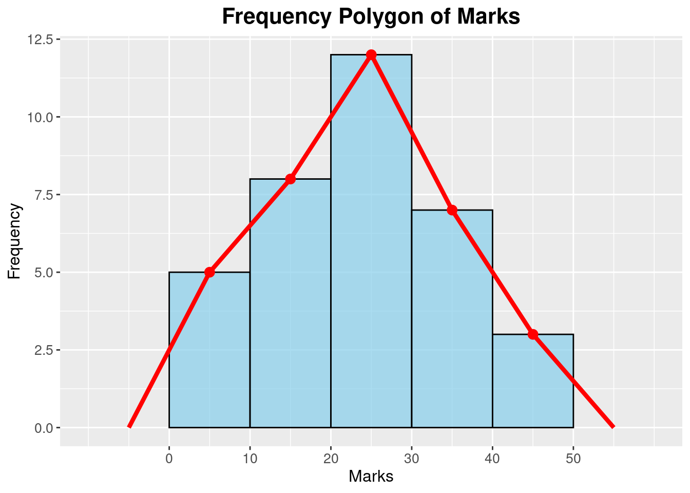
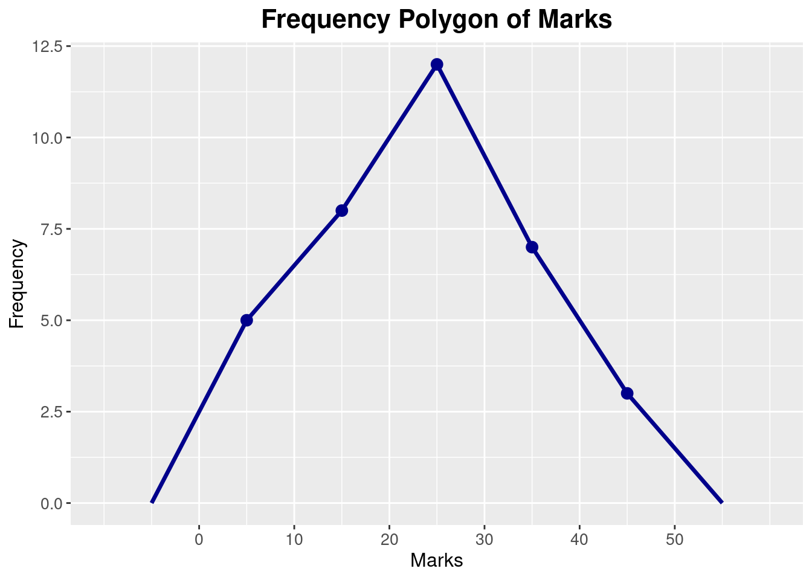
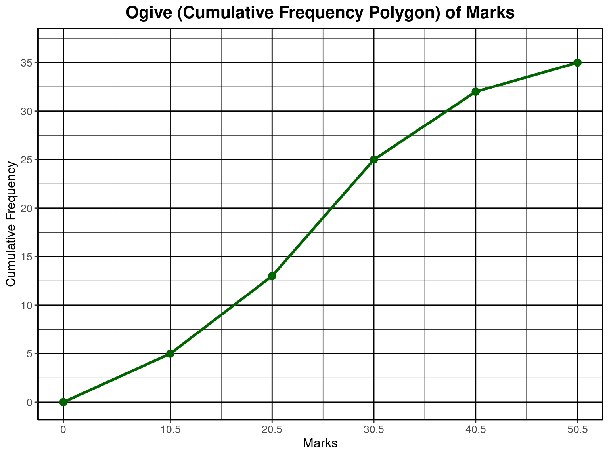

| Abdullah Al Mahmud | docs.statmania.info |
The ages of 20 participants in a fitness program were recorded and found to be as follows:
25, 30, 28, 35, 40, 38, 26, 32, 36, 31,
27, 33, 29, 41, 42, 37, 34, 39, 43, 45
What do understand by looking?
| Marks | Frequency | Cumulative Frequency |
|---|---|---|
| 0 - 10 | 5 | 5 |
| 11 - 20 | 8 | 13 |
| 21 - 30 | 12 | 25 |
| 31 - 40 | 7 | 32 |
| 41 - 50 | 3 | 35 |
Three things required
Discrete
Continuous



\(\displaystyle \bar{X} = \frac{\sum_{i=1}^{k} f_i x_i}{\sum_{i=1}^{k} f_i} = \frac{\sum_{i=1}^{k} f_i x_i}{N}\)
Find AM
Weighetd mean: \(\displaystyle \bar{X}_w = \frac{\sum_{i=1}^{n} w_i X_i}{\sum_{i=1}^{n} w_i}\)
| Course | Marks | Credit |
|---|---|---|
| Simulation | 83 | 2 |
| Probability | 75 | 4 |
| Econometrics | 92 | 3 |
*Credit is weight